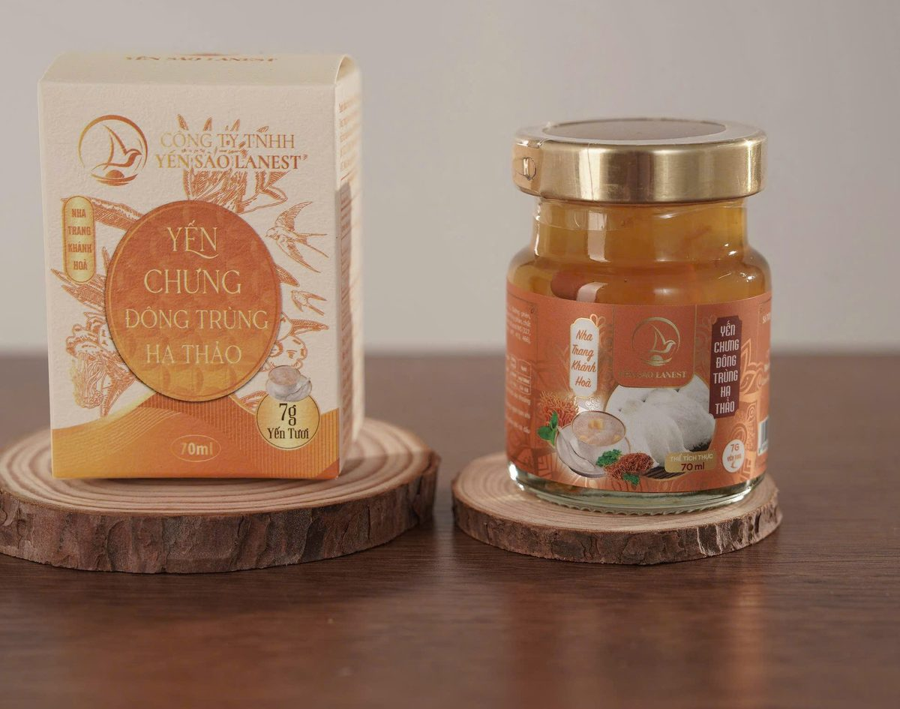
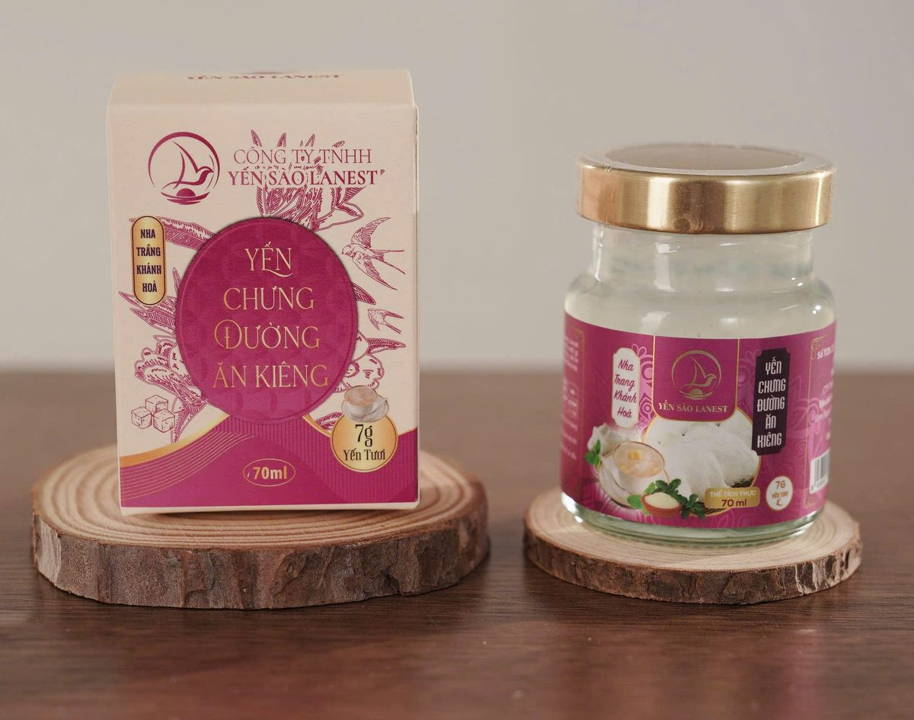

Con Ở Xa Mua Yến Cho Ba Mẹ: Chọn Sao Để Ba Mẹ Tự Dùng Được, Dùng Đều
Yến Sào Lanest · Đăng ngày 23/11/2026

Đi làm xa, nhiều anh chị gửi gắm nỗi lo bằng một thùng yến gửi về quê. Nhưng mua yến cho ba mẹ khi mình không ở cạnh khác hẳn mua cho chính mình: không ai chưng giùm, không ai nhắc ba mẹ dùng, và nếu vị không hợp thì hũ yến nằm trong tủ tới hết hạn. Bài này nói những gì người làm yến như Lanest hay dặn khách: chọn loại ba mẹ tự dùng được, hỏi ba mẹ điều gì trước, và dặn ba mẹ thế nào cho dùng đều.
Hũ yến chưng đông trùng hạ thảo 70ml đi cùng hộp lẻ, mở nắp là dùng được
1. Khi không ở cạnh, món dễ dùng quan trọng hơn món đắt
Yến tinh chế phải ngâm nở khoảng 15–30 phút, rồi chưng cách thủy, nước không sôi mạnh. Ba mẹ khỏe, quen bếp núc thì làm được. Nhưng nếu ba mẹ đã lớn tuổi, ở một mình, mắt kém hay ngại nấu, hộp yến khô rất dễ bị cất kỹ "để dành".
Vì vậy với ba mẹ ở xa, Lanest thường gợi ý yến hũ chưng sẵn: mở nắp là dùng, không cần bếp. Lanest có hai dòng:
- Yến hũ 7g yến tươi: 14 vị, hũ thủy tinh 70ml, có hộp lẻ từng hũ.
- Tổ yến chưng nguyên chất 100%: mỗi hũ 1,5g tổ yến (tương đương 15g yến tươi), 3 vị đường phèn, đông trùng hạ thảo, gừng.
Hai dòng khác nhau thế nào có trong bài yến hũ nguyên chất 100% và yến hũ 7g. Nếu ba mẹ vẫn thích tự chưng, xem thêm yến hũ chưng sẵn hay tự chưng.
2. Gọi hỏi ba mẹ ba câu trước khi đặt
Một cuộc gọi năm phút giúp anh chị khỏi mua sai cả thùng:
- Ba mẹ đang điều trị bệnh gì, đang uống thuốc gì không? Nếu có, nhờ ba mẹ hỏi bác sĩ điều trị trước khi dùng yến thường xuyên. Chụp nhãn thành phần gửi ba mẹ mang theo khi đi khám là cách nhanh nhất. Yến là thực phẩm, không thay thế thuốc.
- Ba mẹ có cần hạn chế đường không? Câu này quyết định chọn vị có đường phèn hay vị dùng đường isomalt.
- Ba mẹ thích vị thế nào? Ngọt thanh, bùi, hay vị ấm. Đừng đoán thay ba mẹ: trong khảo sát khách hàng của Lanest, có khách góp ý vị gừng "hơi nồng", nên người chưa quen vị gừng nên thử một hũ trước.
3. Chọn vị theo đúng người dùng
Bảng dưới lấy theo cột "đối tượng sử dụng" trong tài liệu mô tả từng vị của Lanest:
| Ba mẹ thế nào | Vị nên xem | Ghi chú |
| Chưa biết ba mẹ thích gì | Đường phèn | Vị bán chạy nhất của Lanest, giữ vị yến nguyên bản |
| Ba mẹ lớn tuổi, thích vị bùi nhẹ | Hạt sen | Tài liệu ghi hợp người lớn tuổi |
| Ba mẹ thích vị ấm | Gừng | Vị cay ấm khá rõ, nên thử trước |
| Muốn một hũ "chỉn chu" hơn để biếu | Đông trùng hạ thảo | Tài liệu ghi hợp người lớn tuổi, người cần bồi bổ |
| Ba mẹ cần hạn chế đường | Đường ăn kiêng, đông trùng hạ thảo ăn kiêng | Dùng 2,4g đường isomalt thay đường phèn |
Lưu ý: ba vị của dòng nguyên chất 100% đều có đường phèn, nên ba mẹ cần hạn chế đường thì xem hai vị isomalt ở dòng 7g. Người đang điều trị tiểu đường vẫn nên hỏi bác sĩ về lượng dùng, xem thêm bài yến sào cho người tiểu đường. Lanest cho phối nhiều vị trong một đơn, nên lần đầu anh chị có thể gửi mỗi vị vài hũ để ba mẹ tự chọn.

Yến chưng đường ăn kiêng, một trong hai vị dùng đường isomalt thay đường phèn
4. Bốn điều nên dặn ba mẹ
Hàng về tới nơi mới là lúc việc chăm ba mẹ từ xa bắt đầu. Anh chị có thể viết bốn dòng này ra giấy, chữ to, dán lên tủ lạnh của ba mẹ:
- Dùng lúc bụng nhẹ: sáng sớm hoặc buổi tối. Không dùng ngay sau bữa chính.
- Khoảng 3 lần mỗi tuần là đủ với người lớn tuổi. Không cần ngày nào cũng dùng, cũng đừng dùng dồn mấy hũ rồi bỏ ngang.
- Chưa mở nắp thì để nơi khô ráo, thoáng mát. Đã mở nắp thì cất tủ lạnh và dùng sớm. Không dùng khi thấy hũ có dấu hiệu lạ.
- Lắc nhẹ trước khi uống, uống lạnh ngon hơn. Ba mẹ thích uống ấm thì chưng cách thủy, không đun sôi trực tiếp.
Cách cất cả thùng cho đúng có trong bài bảo quản yến hũ chưng sẵn.
5. Gửi đều tay thay vì gửi một lần thật nhiều
Cẩm nang dùng yến của Lanest nhấn mạnh: yến không phải "thần dược tức thì", dùng đều mới là điều quan trọng. Với con ở xa, cách dễ giữ nhịp nhất là gửi theo đợt vừa đủ dùng. Ví dụ để dễ hình dung: ba và mẹ mỗi người dùng 3 hũ mỗi tuần thì một tháng khoảng 24–26 hũ.
- Gửi vừa đủ một, hai tháng, để ba mẹ không phải cất quá nhiều, cũng dễ xem hạn dùng in trên bao bì.
- Mỗi lần gọi điện hỏi ba mẹ còn bao nhiêu hũ, vị nào thích, vị nào bỏ dở, để đợt sau đổi vị cho hợp.
- Về thăm nhà mà muốn tự chưng yến cho ba mẹ: yến đã chưng cất ngăn mát và dùng trong 1–2 ngày.
6. Giao thẳng tới tay ba mẹ
Khi đặt, anh chị ghi họ tên, số điện thoại và địa chỉ của ba mẹ ở phần người nhận. Lanest giao toàn quốc qua đơn vị vận chuyển, mất khoảng 1–5 ngày tùy khu vực. Với đơn thanh toán khi nhận hàng, người nhận được kiểm tra hũ, tem niêm phong, số lượng và hạn dùng trước khi trả tiền, nên anh chị nhắc ba mẹ xem kỹ lúc nhận. Các bước đặt, giao và đổi trả có trong bài mua yến tại Lanest.
Câu hỏi thường gặp
Ba mẹ đang uống thuốc huyết áp, tiểu đường thì có dùng yến được không?
Lanest không trả lời thay bác sĩ. Anh chị nhờ ba mẹ mang nhãn thành phần hỏi bác sĩ điều trị trước khi dùng thường xuyên. Yến là thực phẩm, không thay thế thuốc.
Nên mua yến tinh chế hay yến hũ cho ba mẹ ở xa?
Ba mẹ quen bếp, thích tự chưng thì yến tinh chế vẫn hợp. Ba mẹ lớn tuổi, ở một mình hoặc ngại nấu thì yến hũ chưng sẵn tiện hơn, mở nắp là dùng.
Một đơn có gửi được nhiều vị khác nhau không?
Được. Lanest cho phối nhiều vị trong cùng một đơn, anh chị báo vị muốn phối khi đặt qua hotline 0258 6278 627.